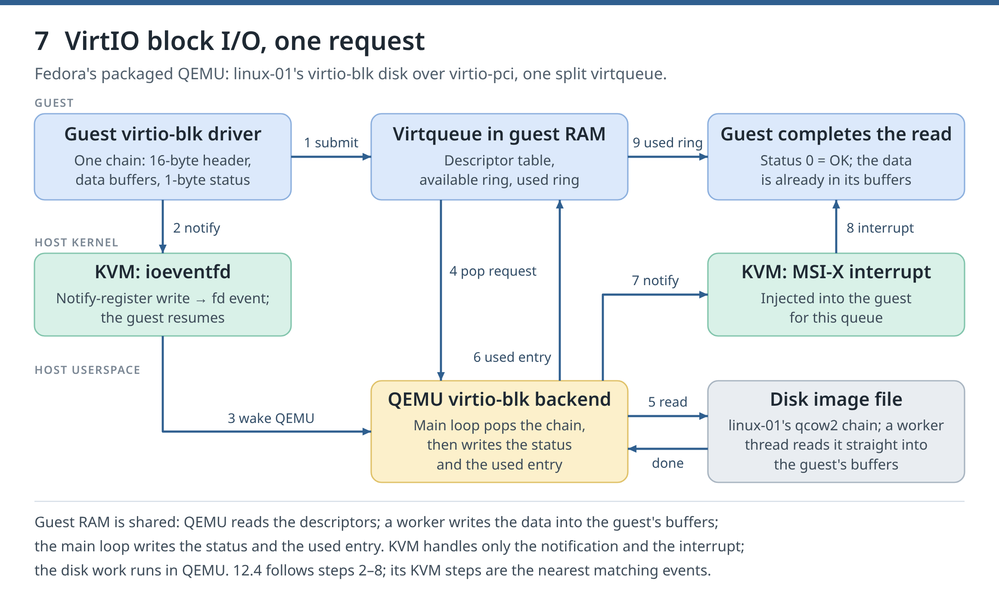

12. QEMU, VirtIO and the I/O path
Goal. Look inside the QEMU process that runs linux-01: its threads, its monitor and its VirtIO devices. You will follow one 3.5 KiB disk read through KVM and QEMU and back, then measure why a VirtIO disk is faster than an emulated one.
Your chapter 11 VMM handled every exit in one thread; QEMU does the same job at full scale. This chapter uses Fedora's packaged QEMU under libvirt: you inspect and trace linux-01, then briefly attach a scratch disk to compare two device models.
Reading: QEMU monitor, VirtIO 1.2 (sections 2.7 and 5.2), Virtqueues and virtio ring, and bpftrace(8).
12.0 Starting point #Day 9 lab
Goal. Have linux-01 running and install the tracing tool.
Commands. new-guest.sh (chapter 1.7) starts linux-01, or rebuilds it if a Clean up removed it:
bash ~/kvm-course/bin/new-guest.sh linux-01bpftrace runs small tracing programs inside the kernel. Each time QEMU passes one of the markers compiled into it, or KVM passes one of its tracepoints (fixed spots in the kernel that report events), bpftrace can run a short action, such as printing what it sees. Install it if it is missing and record the transaction, as in chapter 0.3:
(
set -euo pipefail
if rpm -q bpftrace >/dev/null; then
echo 'bpftrace is already installed'
else
sudo dnf install -y bpftrace
dnf history list | awk 'NR==2 {print $1}' >> ~/kvm-course/dnf-transactions.txt
fi
bpftrace --version
mkdir -p ~/kvm-course/ch12
)
cd ~/kvm-course/ch12Expected output, trimmed. On the validation host:
linux-01
bpftrace v0.24.2Check. new-guest.sh ends with linux-01, and bpftrace prints its version. All later commands run in ~/kvm-course/ch12.
12.1 One process, many threads #Day 9 lab
Goal. Find linux-01's QEMU process and its threads, and see guest code run in a vCPU thread.
Commands. libvirt writes the process ID of each running guest's QEMU to /run/libvirt/qemu/NAME.pid. Save it in PID, then list the process, its threads and its KVM descriptors:
PID=$(sudo cat /run/libvirt/qemu/linux-01.pid)
ps -o pid,nlwp,rss,comm -p "$PID"
ps -T -o tid,comm -p "$PID"
sudo ls -l /proc/"$PID"/fd | grep -E '/dev/kvm|anon_inode:kvm'Expected output, trimmed. On the validation host (numbers differ):
PID NLWP RSS COMMAND
39581 17 616608 qemu-system-x86
TID COMMAND
39581 qemu-system-x86
39588 qemu-system-x86
39589 worker
39590 vhost-39581
39591 IO mon_iothread
39592 CPU 0/KVM
39593 CPU 1/KVM
39595 kvm-nx-lpage-re
lrwx------. 1 qemu qemu 64 Oct 2 00:48 17 -> /dev/kvm
lrwx------. 1 qemu qemu 64 Oct 2 00:48 18 -> anon_inode:kvm-vm
lrwx------. 1 qemu qemu 64 Oct 2 00:48 31 -> anon_inode:kvm-vcpu:0
lr-x------. 1 qemu qemu 64 Oct 2 00:48 32 -> anon_inode:kvm-vcpu-stats:0
lrwx------. 1 qemu qemu 64 Oct 2 00:48 33 -> anon_inode:kvm-vcpu:1
lr-x------. 1 qemu qemu 64 Oct 2 00:48 34 -> anon_inode:kvm-vcpu-stats:1NLWP is the number of threads, RSS the memory in use in KiB. libvirt starts QEMU with debug-threads=on, which names the threads:
- The main thread, whose TID equals the PID, runs QEMU's main loop. It waits on many file descriptors at once (disk completions, timers, notifications from the guest) and runs the device code each event needs. It also executes the monitor commands of 12.2. Most device code is protected by one lock, the Big QEMU Lock (BQL).
CPU 0/KVMandCPU 1/KVMare the vCPU threads. Each callsKVM_RUNin a loop, like your tiny VMM. When an exit needs a device, the vCPU thread takes the BQL and runs that device's code itself.- The rest are helpers. The second
qemu-system-x86thread is QEMU's RCU helper, which frees memory no thread uses any more; it starts before thread naming is on.IO mon_iothreadonly reads and writes the monitor socket and hands each command to the main thread.workerthreads come and go with disk I/O, to run blocking file reads and writes.vhost-PIDruns kernel code that moves the VirtIO network card's packets (vhost-net), andkvm-nx-lpage-reis a KVM housekeeping task; the kernel creates both inside QEMU's process.
The descriptors are the three kinds from chapter 11: /dev/kvm, one kvm-vm, and one kvm-vcpu per vCPU. Each kvm-vcpu-stats descriptor gives that vCPU's KVM counters, which 12.5 reads.
Now make the guest busy on its second vCPU for five seconds and compare the threads' CPU time. timeout stops sha256sum with status 124, which the echo reports:
ps -T -o tid,comm,time -p "$PID" | grep -E 'TIME|CPU'
ssh -F ~/kvm-course/ssh/config linux-01 'timeout 5 taskset -c 1 sha256sum /dev/zero; echo "stopped with status $?"'
ps -T -o tid,comm,time -p "$PID" | grep -E 'TIME|CPU'Expected output. On the validation host:
TID COMMAND TIME
39592 CPU 0/KVM 00:00:04
39593 CPU 1/KVM 00:00:02
stopped with status 124
TID COMMAND TIME
39592 CPU 0/KVM 00:00:04
39593 CPU 1/KVM 00:00:07Check. CPU 1/KVM gained about five seconds; the other vCPU barely changed. The guest's instructions ran inside that thread's KVM_RUN.
If it fails. No such file or directory for the PID file: linux-01 is not running; rerun 12.0.
12.2 Ask QEMU directly: QMP and HMP #Day 9 lab
Goal. Read QEMU's own view of the VM through its monitor.
QMP, the QEMU Machine Protocol (chapter 1.5), takes commands in JSON over a socket. libvirt opens that socket when it starts QEMU and is its only user. virsh qemu-monitor-command passes one command through libvirt, as query-kvm did in chapter 1.5. With --hmp it sends a command of the HMP, the human monitor you used in chapter 1.6 (info kvm). HMP output is for people and may change between QEMU versions; programs use QMP.
Use these commands only to read. A command that changes the VM behind libvirt's back leaves libvirt with a wrong picture of it. The first time you use qemu-monitor-command on a running guest, libvirt marks the domain tainted in its log, so that a bug report shows it.
Commands. query-cpus-fast maps each vCPU to its thread ID; info block shows the disks; the last command finds the taint message:
sudo virsh -c qemu:///system qemu-monitor-command linux-01 --pretty '{"execute":"query-cpus-fast"}' | grep -E 'cpu-index|thread-id'
sudo virsh -c qemu:///system qemu-monitor-command linux-01 --hmp 'info block'
sudo grep -m1 'tainted: custom-monitor' /var/log/libvirt/qemu/linux-01.logExpected output, trimmed. On the validation host:
"thread-id": 39592,
"thread-id": 0,
"cpu-index": 0,
"thread-id": 39593,
"thread-id": 0,
"cpu-index": 1,
libvirt-2-format: /var/lib/libvirt/images/kvm-course/linux-01.qcow2 (qcow2)
Attached to: /machine/peripheral/virtio-disk0/virtio-backend
Cache mode: writeback
Backing file: /var/lib/libvirt/images/kvm-course/base.qcow2 (chain depth: 1)
2026-10-02 07:48:09.876+0000: Domain id=156 is tainted: custom-monitorThe indented "thread-id": 0 lines belong to each vCPU's place in the guest's CPU topology (socket, core, thread), not to a host thread.
Check. The two top-level thread IDs equal the vCPU TIDs from 12.1, and info block shows your overlay and its base image attached to virtio-disk0.
12.3 VirtIO: devices designed for VMs #Day 9 lab
Goal. Understand how a VirtIO device and its driver exchange requests, and read the state of linux-01's disk queues.
An emulated device reproduces real hardware's registers, so an unmodified driver works; each register access that QEMU emulates is an exit to QEMU. A paravirtual device is designed for VMs instead, and its guest driver knows it talks to a hypervisor. VirtIO is the standard family of paravirtual devices: virtio-blk for disks, virtio-net for networks, and others; Fedora's guest kernel includes their drivers.
How a request travels (split virtqueue, VirtIO 1.2 section 2.7). Driver and device share a virtqueue in guest RAM, made of three parts:
- The descriptor table: each entry gives a buffer's guest physical address, its length and flags.
NEXTchains descriptors together;WRITEmarks a buffer the device fills. - The available ring: the driver puts the first descriptor of each new chain here and counts up its
idx. - The used ring: the device puts each finished chain here, with the number of bytes it wrote, and counts up its own
idx.
A virtio-blk read is one chain: a 16-byte header (request type and starting sector), the data buffers, and a 1-byte status the device fills (0 means OK). After adding work, the driver notifies the device by writing to a register in the device's PCI memory area. QEMU registers that address as an ioeventfd: KVM turns the write into an event on a file descriptor without leaving the kernel and resumes the guest, and QEMU's main loop wakes up to do the work. When the request is done, QEMU asks KVM to inject the device's interrupt into the guest. On PCI this is an MSI-X interrupt, a message written to a special address instead of a signal on a wire, so each queue can have its own.

Figure 7. One virtio-blk read on virtio-pci: descriptors and the available ring, a notification, QEMU's read from the image, then the used ring and an interrupt.
At boot, driver and device also agree on optional features (bits such as VIRTIO_RING_F_EVENT_IDX, which lets each side skip unneeded notifications), and the driver sets status bits up to DRIVER_OK.
Commands. List the VirtIO devices, then the disk's negotiated state and its first queue. DEV is the disk's path in QEMU's object tree, from info virtio:
sudo virsh -c qemu:///system qemu-monitor-command linux-01 --hmp 'info virtio'
DEV=/machine/peripheral/virtio-disk0/virtio-backend
sudo virsh -c qemu:///system qemu-monitor-command linux-01 --hmp "info virtio-status $DEV" | grep -E 'num_vqs|DRIVER_OK|EVENT_IDX|BLK_F_MQ'
sudo virsh -c qemu:///system qemu-monitor-command linux-01 --hmp "info virtio-queue-status $DEV 0"Expected output, trimmed. On the validation host (counters and addresses differ; each feature line also appears a second time, in the device's own list):
/machine/peripheral/balloon0/virtio-backend [virtio-balloon]
/machine/peripheral/virtio-disk0/virtio-backend [virtio-blk]
/machine/peripheral/net0/virtio-backend [virtio-net]
/machine/peripheral/virtio-serial0/virtio-backend [virtio-serial]
/machine/peripheral/rng0/virtio-backend [virtio-rng]
num_vqs: 2
VIRTIO_CONFIG_S_DRIVER_OK: Driver setup and ready
VIRTIO_RING_F_EVENT_IDX: Used & avail. event fields enabled,
VIRTIO_BLK_F_MQ: Multiqueue supported,
/machine/peripheral/virtio-disk0/virtio-backend:
device_name: virtio-blk
queue_index: 0
inuse: 0
used_idx: 1929
signalled_used: 1929
signalled_used_valid: true
last_avail_idx: 1929
shadow_avail_idx: 1929
VRing:
num: 256
num_default: 256
align: 4096
desc: 0x00000000019c0000
avail: 0x00000000019c1000
used: 0x00000000019c1240The disk has two queues, one per vCPU (num_vqs, feature VIRTIO_BLK_F_MQ), so each vCPU submits requests to its own ring. The queue holds 256 descriptors. desc, avail and used are the guest physical addresses of its three parts. last_avail_idx and used_idx count the requests this queue has taken and finished since boot; they wrap at 65536. inuse 0 means none is in flight.
In the guest, each queue has its own MSI-X interrupt. virtio-blk names its queues req.0, req.1, so virtio2 is the disk here:
ssh -F ~/kvm-course/ssh/config linux-01 'grep virtio /proc/interrupts'Expected output, trimmed. On the validation host (the disk's lines; the other VirtIO devices have their own):
42: 0 0 PCI-MSIX-0000:04:00.0 0-edge virtio2-config
43: 1595 0 PCI-MSIX-0000:04:00.0 1-edge virtio2-req.0
44: 0 1353 PCI-MSIX-0000:04:00.0 2-edge virtio2-req.1Check. The disk's status includes DRIVER_OK, and used_idx equals last_avail_idx.
12.4 Follow one disk read #Day 9 lab
Goal. Follow a disk read in QEMU and nearby KVM events. Not validated here: this trace on AMD hosts; no AMD machine was available. On AMD, study the worked output, then continue at 12.5.
Markers. QEMU has thousands of trace points. Fedora builds them as USDT markers (user-level statically defined tracing): spots in the program that do nothing until a tracer such as bpftrace attaches to them. List the virtio-blk markers; 2>/dev/null hides bpftrace's warnings about a few markers it cannot decode, and grep -v zone drops the markers for zoned disks, which linux-01 does not have:
sudo bpftrace -l 'usdt:/usr/bin/qemu-system-x86_64:qemu:virtio_blk_*' 2>/dev/null | grep -v zoneThe trace. The program picks out one read by its size, 3,584 bytes (7 sectors), which other guest I/O rarely uses. How to read it:
- A bpftrace program is a list of probes,
WHERE /CONDITION/ { ACTIONS }.arg0,arg1… are a marker's arguments andargs.NAMEa tracepoint's fields;commis the thread's name,nsecsa timestamp in nanoseconds, and$1QEMU's process ID, given on the command line. @namevariables keep values between probes;@pop[arg1]keeps one value per address. QEMU's virtio-blk request (req) begins with its queue element (elem), so both have the same address, and the QEMU probes follow that address and its queue from step to step.- The KVM and system-call probes select nearby events, not a request ID: the latest
kvm_fast_mmioevent (a guest notification, 12.3), a read syscall while the request is open, and an MSI request from the thread that calledvirtio_notify. These need not belong to this read. Times start at that notification. ENDempties the variables, which bpftrace would otherwise print when it exits.
Save it:
cat > ~/kvm-course/ch12/one-read.bt <<'EOF'
// one-read.bt QEMU_PID: follow one 3584-byte virtio-blk read through KVM and QEMU.
tracepoint:kvm:kvm_fast_mmio /pid == $1/ { @kick = nsecs; @kicker = comm; }
usdt:/usr/bin/qemu-system-x86_64:qemu:virtqueue_pop { @pop[arg1] = nsecs; @vq[arg1] = arg0; }
usdt:/usr/bin/qemu-system-x86_64:qemu:virtio_blk_handle_read /arg3 == 7/ {
@req = arg1; @q = @vq[arg1]; @t0 = @kick;
printf("%4d us %-15s the guest notified the queue (kvm_fast_mmio)\n", 0, @kicker);
printf("%4d us %-15s took the request from the ring (virtqueue_pop)\n", (@pop[arg1] - @t0) / 1000, comm);
printf("%4d us %-15s read sector %d, %d sectors (virtio_blk_handle_read)\n", (nsecs - @t0) / 1000, comm, arg2, arg3);
}
usdt:/usr/bin/qemu-system-x86_64:qemu:blk_co_preadv /@req && arg3 == 3584/ {
printf("%4d us %-15s read %d bytes at disk offset %d (blk_co_preadv)\n", (nsecs - @t0) / 1000, comm, arg3, arg2);
}
tracepoint:syscalls:sys_enter_pread64,tracepoint:syscalls:sys_enter_preadv /@req && pid == $1/ {
printf("%4d us %-15s read the image file (pread system call)\n", (nsecs - @t0) / 1000, comm);
}
usdt:/usr/bin/qemu-system-x86_64:qemu:virtio_blk_rw_complete /arg1 == @req/ {
printf("%4d us %-15s read finished, ret %d (virtio_blk_rw_complete)\n", (nsecs - @t0) / 1000, comm, arg2);
}
usdt:/usr/bin/qemu-system-x86_64:qemu:virtqueue_fill /arg1 == @req/ {
printf("%4d us %-15s used entry: %d bytes written (virtqueue_fill)\n", (nsecs - @t0) / 1000, comm, arg2);
}
usdt:/usr/bin/qemu-system-x86_64:qemu:virtqueue_flush /@req && arg0 == @q/ {
printf("%4d us %-15s used index moved on (virtqueue_flush)\n", (nsecs - @t0) / 1000, comm);
}
usdt:/usr/bin/qemu-system-x86_64:qemu:virtio_notify /@req && arg1 == @q/ {
printf("%4d us %-15s interrupt the guest (virtio_notify)\n", (nsecs - @t0) / 1000, comm);
@irq = tid;
}
tracepoint:kvm:kvm_msi_set_irq /@irq && tid == @irq/ {
printf("%4d us %-15s KVM delivers MSI vector %d (kvm_msi_set_irq)\n", (nsecs - @t0) / 1000, comm, args.data & 0xff);
exit();
}
interval:s:60 { exit(); }
END { clear(@kick); clear(@kicker); clear(@pop); clear(@vq); clear(@req); clear(@q); clear(@t0); clear(@irq); }
EOFStart the trace in the background and wait until bpftrace has attached. Then, in one SSH session, read the guest's queue-0 interrupt count, run the read on guest CPU 0 (whose requests use queue 0), and read the count again; set -e stops the guest's shell if a step fails:
(
set -euo pipefail
PID=$(sudo cat /run/libvirt/qemu/linux-01.pid)
sudo bpftrace -p "$PID" one-read.bt "$PID" > one-read.txt 2> one-read.err &
TRACE_PID=$!
timeout 60 bash -c 'until grep -q Attached one-read.err; do sleep 1; done'
ssh -F ~/kvm-course/ssh/config linux-01 'set -e; grep req.0 /proc/interrupts; sudo taskset -c 0 dd if=/dev/vda of=/dev/null bs=3584 count=1 skip=1000 iflag=direct; grep req.0 /proc/interrupts'
wait "$TRACE_PID"
cat one-read.txt
)-p "$PID" attaches the QEMU markers to linux-01's QEMU only; the second "$PID" becomes $1. bpftrace writes the trace to one-read.txt and its own messages, such as Attached 14 probes, to one-read.err. It exits after the interrupt, or after 60 seconds, and wait "$TRACE_PID" returns its exit status. iflag=direct bypasses the guest's page cache, so the read really reaches the disk; skip=1000 starts at sector 7000.
Expected output, trimmed. On the validation host (times and counts differ):
43: 1595 0 PCI-MSIX-0000:04:00.0 1-edge virtio2-req.0
3584 bytes (3.6 kB, 3.5 KiB) copied, 0.000374186 s, 9.6 MB/s
43: 1608 0 PCI-MSIX-0000:04:00.0 1-edge virtio2-req.0
0 us CPU 0/KVM the guest notified the queue (kvm_fast_mmio)
46 us qemu-system-x86 took the request from the ring (virtqueue_pop)
55 us qemu-system-x86 read sector 7000, 7 sectors (virtio_blk_handle_read)
57 us qemu-system-x86 read 3584 bytes at disk offset 3584000 (blk_co_preadv)
98 us worker read the image file (pread system call)
333 us qemu-system-x86 read finished, ret 0 (virtio_blk_rw_complete)
335 us qemu-system-x86 used entry: 3585 bytes written (virtqueue_fill)
335 us qemu-system-x86 used index moved on (virtqueue_flush)
336 us qemu-system-x86 interrupt the guest (virtio_notify)
338 us qemu-system-x86 KVM delivers MSI vector 42 (kvm_msi_set_irq)Read it with Figure 7. QEMU's main thread took the sector-7000, 7-sector request from the ring (byte offset 3,584,000). A nearby probe saw a worker enter a read syscall; QEMU's worker threads read the image straight into the guest's buffers. The request completed with ret 0, then the main thread wrote the status and used entry (3,585 bytes: data plus status). The gap from pread to read finished includes scheduling and the hand-back to the main thread. The first and last lines are examples of Figure 7's steps 2 and 8. MSI vector 42 is a CPU vector chosen by the guest kernel, not queue 0's IRQ number 43 in /proc/interrupts. The queue-0 count rose by 13; other guest I/O can use it too.
Check. The sector-7000, 7-sector request appears with ret 0 and a 3,585-byte used entry, between a notification and an interrupt.
If it fails. No Attached line within a minute: inspect one-read.err for bpftrace's error. Empty one-read.txt: no matching read was captured; check the SSH output and the dd options iflag=direct and bs=3584.
12.5 Emulated device versus VirtIO #Day 9 lab
Goal. Read the same image through an emulated USB disk and through a VirtIO disk, and compare time and exits.
QEMU emulates a USB 3 (xHCI) controller for linux-01. A USB disk behind it is fully emulated: the guest's ordinary USB driver works the controller's registers, and QEMU emulates each access after an MMIO exit. KVM counts exits per vCPU; HMP's info stats vcpu shows the counters of vCPU 0 (exits: all VM exits; mmio_exits: MMIO exits returned to QEMU).
Commands. Find the USB controller in linux-01's definition, then create a 128 MiB empty raw image in the course pool:
sudo virsh -c qemu:///system dumpxml linux-01 | grep "controller type='usb'"
P=/var/lib/libvirt/images/kvm-course
sudo qemu-img create -f raw $P/ch12-scratch.raw 128M
sudo virsh -c qemu:///system pool-refresh kvm-courseSave a test that waits for a disk to appear in the guest, then reads 20,000 blocks of 4 KiB from it on guest CPU 0 and prints how much vCPU 0's two counters grew:
cat > ~/kvm-course/ch12/read-test.sh <<'EOF'
#!/usr/bin/env bash
# read-test.sh DISK: read 20,000 x 4 KiB from DISK in linux-01 and count vCPU 0's exits.
set -euo pipefail
stats() { sudo virsh -c qemu:///system qemu-monitor-command linux-01 --hmp 'info stats vcpu exits,mmio_exits' | grep exits; }
ssh -F ~/kvm-course/ssh/config linux-01 "timeout 60 sh -c 'until [ -b $1 ]; do sleep 1; done'"
stats > before.txt
ssh -F ~/kvm-course/ssh/config linux-01 "sudo taskset -c 0 dd if=$1 of=/dev/null bs=4k count=20000 iflag=direct"
stats > after.txt
paste before.txt after.txt | awk '{print $1, "grew by", $6 - $3}'
EOFAttach the image as a VirtIO disk, test it, and detach it. --serial gives the disk a name, so it appears in the guest under /dev/disk/by-id. Unplugging a PCI disk needs the guest's cooperation and finishes a moment after detach-disk returns, so the last line waits until libvirt no longer lists vdb:
sudo virsh -c qemu:///system attach-disk linux-01 $P/ch12-scratch.raw vdb --targetbus virtio --serial ch12virtio
bash read-test.sh /dev/disk/by-id/virtio-ch12virtio
sudo virsh -c qemu:///system detach-disk linux-01 vdb
timeout 60 bash -c 'while sudo virsh -c qemu:///system domblklist linux-01 | grep -q "^ *vdb "; do sleep 1; done'Attach the same image as a USB disk, test it, and detach it:
sudo virsh -c qemu:///system attach-disk linux-01 $P/ch12-scratch.raw sdb --targetbus usb --serial ch12usb
bash read-test.sh /dev/disk/by-id/usb-QEMU_QEMU_HARDDISK_ch12usb-0:0
sudo virsh -c qemu:///system detach-disk linux-01 sdbExpected output, trimmed. On the validation host (your numbers differ):
<controller type='usb' index='0' model='qemu-xhci' ports='15'>
Disk attached successfully
81920000 bytes (82 MB, 78 MiB) copied, 0.325279 s, 252 MB/s
mmio_exits grew by 0
exits grew by 42816
Disk detached successfully
Disk attached successfully
81920000 bytes (82 MB, 78 MiB) copied, 1.87093 s, 43.8 MB/s
mmio_exits grew by 118528
exits grew by 186994
Disk detached successfullyThe same 20,000 reads took 0.33 s through VirtIO and 1.87 s through USB. For VirtIO, QEMU handled no MMIO exits at all: the guest's notifications ended in KVM as ioeventfds, about two exits per read in total. For USB, QEMU handled about six MMIO exits per read, each one a register access of the emulated controller, and the reads took more than five times as long. Both disks read the same empty (sparse) file, so no physical disk was involved: the difference is the device model.
Check. The USB disk needs many mmio_exits per block; the VirtIO disk needs almost none.
If it fails. read-test.sh stops after 60 seconds without the disk: sudo virsh -c qemu:///system domblklist linux-01 shows whether libvirt attached it. Failed to get "write" lock: the previous disk is still attached; wait for its detach to finish.
Chapter pass. Using your own output, explain: which thread ran the guest's instructions, which thread emulated the disk, what the guest wrote to notify the disk, which ring told the guest the read was done, and why the USB disk needs more exits than the VirtIO disk.
Clean up #Day 9 lab
Keep linux-01 for chapter 13. The block stops linux-01, which ends any live scratch-disk attachment, deletes the scratch image and starts linux-01 from its saved definition. bpftrace made the kernel mount its tracing file system again under /sys/kernel/debug, an automount that returns whenever a program looks there; the block unmounts it, then deletes this chapter's files. It stops at the first failure, so an attached image is never deleted:
cd ~
(
set -euo pipefail
if sudo virsh -c qemu:///system dominfo linux-01 >/dev/null 2>&1; then
bash ~/kvm-course/bin/stop-guest.sh linux-01
sudo rm -f /var/lib/libvirt/images/kvm-course/ch12-scratch.raw
sudo virsh -c qemu:///system pool-refresh kvm-course
sudo virsh -c qemu:///system start linux-01
fi
if sudo mountpoint -q /sys/kernel/debug/tracing; then sudo umount /sys/kernel/debug/tracing; fi
rm -rf ~/kvm-course/ch12
)Appendix B removes the rest of the course, including bpftrace.